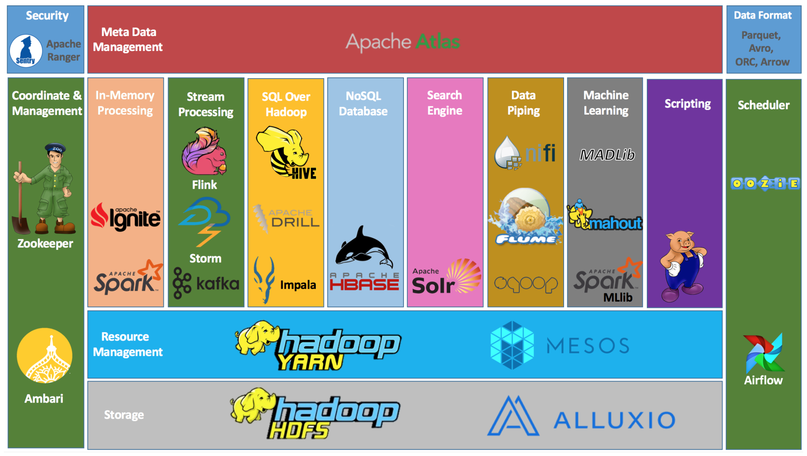

Lecture 7
Distributed File Systems and HDFS
Distributed File Systems and HDFS
Why do we need distributed storage?
The scale problem
Modern applications generate data at rates that far exceed what any single machine can store or process:
- Social media: billions of posts, images, videos
- IoT sensors: trillions of readings per day
- Web crawls: petabytes of HTML, images, links
- Scientific simulations: terabytes per run
{kind=link}
Yesterday’s solution: scale up
The 1990s approach
One big box — all processors share memory
- Very expensive, low-volume hardware
- All-premium components
- Storage and compute tightly coupled
But even the biggest single machine wasn’t big enough!
{kind=link}
Today’s solution: scale out with commodity hardware
Consumer-grade servers
Not expensive, premium, or fancy in any way
Buy lots of cheap, desktop-like servers!
- Easy to add capacity
- Cheaper per CPU/disk
- Failure is the norm, not the exception
The catch
Need more complex software to coordinate many cheaper machines.
{kind=link}
Problems with commodity hardware
Failure rates
- 1–5% of hard drives fail per year
- ~0.2% of DIMMs fail per year
- On a 1,000-node cluster, expect failures every week
Network vs. shared memory
- Much more latency than RAM
- Network throughput << local disk throughput
Uneven performance
- “Stragglers” slow the entire job
{kind=link}
Big data processing systems are built on average machines that fail pretty often.
The software must treat failure as a routine event, not an exception.
What is a distributed file system?
A distributed file system (DFS) stores data across many machines while presenting a single, unified namespace to clients.
Key properties
- Single namespace:
/user/data/logs/looks the same from every node - Fault tolerance: data survives individual node failures
- Scalability: add capacity by adding machines
- Data locality: move computation to the data, not data to computation
{kind=link}
The Google File System (2003): the blueprint
{kind=link}
Why GFS matters
Google’s 2003 paper described a production file system built from commodity hardware, designed around the assumption that:
- Component failures are the norm
- Files are huge (multi-GB) and write-once/read-many
- Sequential reads dominate random reads
- Relaxed consistency is acceptable for batch workloads
GFS proved that a reliable, large-scale distributed file system could be built cheaply.
HDFS: the open-source GFS
Origin story
- 2004: Doug Cutting and Mike Cafarella implement GFS ideas in Java as part of Nutch → Nutch Distributed File System (NDFS)
- 2006: NDFS becomes HDFS when Hadoop is spun out of Nutch/Lucene
- Yahoo! adopts Hadoop; Doug Cutting joins Yahoo!
- 2008: World record — 1 TB sorted in 209 seconds on a 910-node cluster
{kind=link}
Why Hadoop won
Google File System is a proprietary product. Nobody outside Google could use it.
Hadoop is open source (Apache License). Anyone can use, modify, and deploy it.
“Who has heard of Colossus?” (Google’s successor to GFS — almost nobody outside Google)
Open source → ecosystem → community → adoption.
HDFS architecture: NameNode and DataNodes
NameNode (master)
- Manages the file system namespace: directory tree, file-to-block mappings, permissions
- Stores metadata in memory (
fsimage+ edit log) - Does not store actual file data
DataNodes (workers)
- Store and serve actual data blocks
- Report block inventory to NameNode via heartbeats
- Replicate blocks between each other on instruction
{kind=link}
HDFS design principles
Block-based storage
- Files are split into fixed-size blocks (default: 128 MB in HDFS 3.x)
- Each block is stored independently on a DataNode
- Allows large files to span many disks and machines
Replication
- Each block is replicated 3× by default (configurable)
- Replicas are placed across different nodes and racks
- If a DataNode fails, the NameNode re-replicates its blocks elsewhere
Rack-aware placement

Data locality: move computation to the data
The key insight
Network is the bottleneck, not CPU.
Old model: copy data to where the code runs. HDFS/MapReduce model: run code where the data already lives.
When possible, the scheduler assigns work to a node that already holds the relevant block. This eliminates most network traffic for data-intensive workloads.
Consequence: HDFS is tightly coupled to Hadoop/YARN
- YARN resource manager knows which DataNode holds which blocks
- Assigns Map tasks to nodes with local copies first
- Falls back to same-rack nodes, then cross-rack
HDFS is designed for specific workloads
| Pattern | HDFS handles well | HDFS handles poorly |
|---|---|---|
| File size | Large files (GB–TB) | Millions of small files |
| Access pattern | Sequential reads | Random reads/writes |
| Write pattern | Write-once, append-only | Frequent overwrites |
| Latency | High throughput | Low-latency access |
| Clients | Batch jobs | Interactive queries |
Note
HDFS is optimized for the analytics batch processing use case — reading entire datasets sequentially — not for serving web requests or online transactions.
HDFS scalability
{kind=link}
Scaling is linear
- Add a DataNode → cluster gains storage and bandwidth
- NameNode can manage hundreds of millions of blocks
- Real-world clusters:
- Yahoo! (2010): 4,000 nodes, ~70 PB
- Facebook (2010): 2,300 nodes, ~40 PB
- Twitter (2017): 500+ PB across clusters
{kind=link}
HDFS vs. Cloud Object Storage
As cloud computing matured, object stores (S3, Azure Blob, GCS) became a popular alternative to HDFS for large-scale storage.
| HDFS | Cloud Object Store | |
|---|---|---|
| Scalability | Bound by NameNode | Virtually unlimited |
| Coupling | Storage + compute together | Storage separate from compute |
| Cost | CapEx (servers) | OpEx (pay per GB) |
| Fault tolerance | 3× replication | Built in (provider-managed) |
| Interface | POSIX-like CLI / Java API | REST API (s3://, abfs://) |
| Data locality | Yes | No (network always) |
De-coupling storage from compute
The modern cloud data lake pattern
Storage and compute are separate, independently scalable systems.
- Before: HDFS nodes store data and run MapReduce tasks
- After: Data lives in S3/GCS/ADLS; compute clusters (Spark, EMR, Databricks) spin up, read from object store, and spin down
Benefits: - Pay only for compute while jobs run - Store data indefinitely at low cost - Mix and match compute engines
{kind=link}
HDFS command-line interface
HDFS exposes a shell interface that mirrors Unix filesystem commands:
# List files
hdfs dfs -ls /user/hadoop/data/
# Copy local file to HDFS
hdfs dfs -put localfile.csv /user/hadoop/data/
# Copy from HDFS to local
hdfs dfs -get /user/hadoop/data/output/ ./output/
# Print contents of a file
hdfs dfs -cat /user/hadoop/data/results/part-00000
# Create a directory
hdfs dfs -mkdir /user/hadoop/staging
# Remove a file or directory
hdfs dfs -rm -r /user/hadoop/stagingFull reference: HDFS Shell Commands
The Hadoop ecosystem

HDFS is the storage foundation; dozens of tools have been built on top of it. Live reference: https://hadoopecosystemtable.github.io/
Summary: why distributed file systems matter
The core ideas
- Commodity hardware fails — design for resilience, not around it
- Block-based replication provides fault tolerance without expensive RAID
- Data locality eliminates network as the bottleneck
- Single namespace hides distributed complexity from applications
- Write-once / append simplifies consistency
HDFS’s legacy
HDFS proved these ideas work at internet scale. Even as cloud object stores have largely supplanted HDFS for new deployments, every modern data lake — S3, Azure Data Lake, GCS — inherits the same core principles:
- Replication and fault tolerance
- Massive scalability through horizontal partitioning
- Decoupling of storage and compute